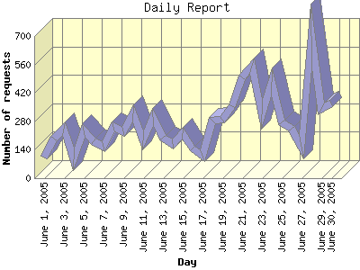

Report generated by Analog 6.0 and Report Magic 2.21
|
Web Server Statistics for "Harish Narayanan (hnarayan) - June 2005" Report generated by Analog 6.0 and Report Magic 2.21 |
The Daily Report identifies the activity for each day within the reporting period. Remember that one page hit can result in several server requests as the images for each page are loaded.

| Day | Number of requests | Number of bytes transferred | Percentage of the bytes | Percentage of the requests | |
|---|---|---|---|---|---|
| 1. | June 1, 2005 | 103 | 4.360 MB | 0.93% | 1.26% |
| 2. | June 2, 2005 | 197 | 7.407 MB | 1.58% | 2.41% |
| 3. | June 3, 2005 | 243 | 10.224 MB | 2.18% | 2.97% |
| 4. | June 4, 2005 | 92 | 2.598 MB | 0.56% | 1.12% |
| 5. | June 5, 2005 | 236 | 21.126 MB | 4.51% | 2.88% |
| 6. | June 6, 2005 | 180 | 6.713 MB | 1.43% | 2.20% |
| 7. | June 7, 2005 | 156 | 3.414 MB | 0.73% | 1.91% |
| 8. | June 8, 2005 | 253 | 17.821 MB | 3.81% | 3.09% |
| 9. | June 9, 2005 | 229 | 8.074 MB | 1.73% | 2.80% |
| 10. | June 10, 2005 | 318 | 97.637 MB | 20.86% | 3.88% |
| 11. | June 11, 2005 | 184 | 75.096 MB | 16.04% | 2.25% |
| 12. | June 12, 2005 | 300 | 8.639 MB | 1.85% | 3.66% |
| 13. | June 13, 2005 | 199 | 12.644 MB | 2.70% | 2.43% |
| 14. | June 14, 2005 | 170 | 5.378 MB | 1.15% | 2.08% |
| 15. | June 15, 2005 | 223 | 7.005 MB | 1.50% | 2.72% |
| 16. | June 16, 2005 | 148 | 3.429 MB | 0.73% | 1.81% |
| 17. | June 17, 2005 | 111 | 7.226 MB | 1.54% | 1.36% |
| 18. | June 18, 2005 | 283 | 12.609 MB | 2.69% | 3.46% |
| 19. | June 19, 2005 | 287 | 10.596 MB | 2.26% | 3.50% |
| 20. | June 20, 2005 | 356 | 18.439 MB | 3.94% | 4.35% |
| 21. | June 21, 2005 | 498 | 10.263 MB | 2.19% | 6.08% |
| 22. | June 22, 2005 | 556 | 26.142 MB | 5.58% | 6.79% |
| 23. | June 23, 2005 | 314 | 17.685 MB | 3.78% | 3.83% |
| 24. | June 24, 2005 | 472 | 12.637 MB | 2.70% | 5.76% |
| 25. | June 25, 2005 | 276 | 9.210 MB | 1.97% | 3.37% |
| 26. | June 26, 2005 | 244 | 3.644 MB | 0.78% | 2.98% |
| 27. | June 27, 2005 | 153 | 11.452 MB | 2.45% | 1.87% |
| 28. | June 28, 2005 | 698 | 19.797 MB | 4.23% | 8.53% |
| 29. | June 29, 2005 | 340 | 6.559 MB | 1.40% | 4.15% |
| 30. | June 30, 2005 | 369 | 10.290 MB | 2.20% | 4.51% |
Most active day June 28, 2005 : 305 pages sent. 698 requests handled. 20,759,111.00 served.
Daily average: 272 requests handled. 15.604 MB served.
This report was generated on July 22, 2005 14:26.
Report time frame June 1, 2005 00:06 to June 30, 2005 23:57.
| Web statistics report produced by: | |
 Analog 6.0 Analog 6.0 |  Report Magic 2.21 Report Magic 2.21 |